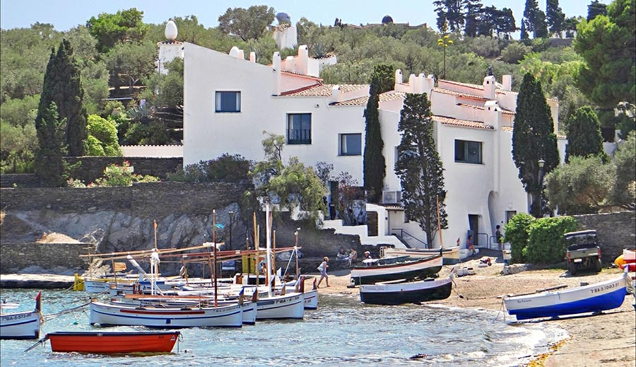

Notre organisme, au coeur du mouvement surréaliste
Découvrez les arts modernes autrement


Vos favoris
La tentation de Saint-Antoine, Salvador Dali
Musée Royaux des Beaux-Arts de Belgique
Le fils de l'Homme, René Magritte
Musée Magritte, Bruxelles
Découvrez Salvador Dali
Musée d’Art Moderne (MoMA), New York
Théâtre-Musée Dalí, Figueras, Espagne
Collection privée
Collection privée
Découvrez Marc Chagall
Musée Solomon R. Guggenheim, New-York
MOMA, New-York
Collection privée
Collection privée
Découvrez René Magritte

MOMA, New-York
Galerie nationale d'Australie

Musée d'art du comté de Los Angeles
Collection privée
Les actualités artistiques
Notre section actualités vous informe de toutes les nouveautés dans le monde du surréalisme.
Expositions en cours
IMAGINE !
100 ans de surréalisme, exposition internationale
Les Musées Royaux des Beaux-Arts de Belgique, Centre Pompidou (Paris), jusqu'au 21 juillet 2024
Dalí : Disruption and Devotion
Museum of Fine Arts, Boston, du 6 juillet au 1e décembre 2024
The Collection of Shuzo Takiguchi
Prefectural Museum of Art and Design, Toyana, Japon. Jusqu'au 15 juillet 2024
Les musées

Maison musée château de Dali et Gala
Portlligat, Cadaqués, Espagne
Fondation ARP
Clamart, Paris, France
Musée d'Art contemporain de Rolandseck
Remagen, Rhénanie-Palatinat, Allemagne
Bienvenue dans l'organisme Surréaliste, repère des amateurs d'arts modernes. Vous trouverez ici des informations sur les artistes, les musées, l'histoire et bien d'autres choses.